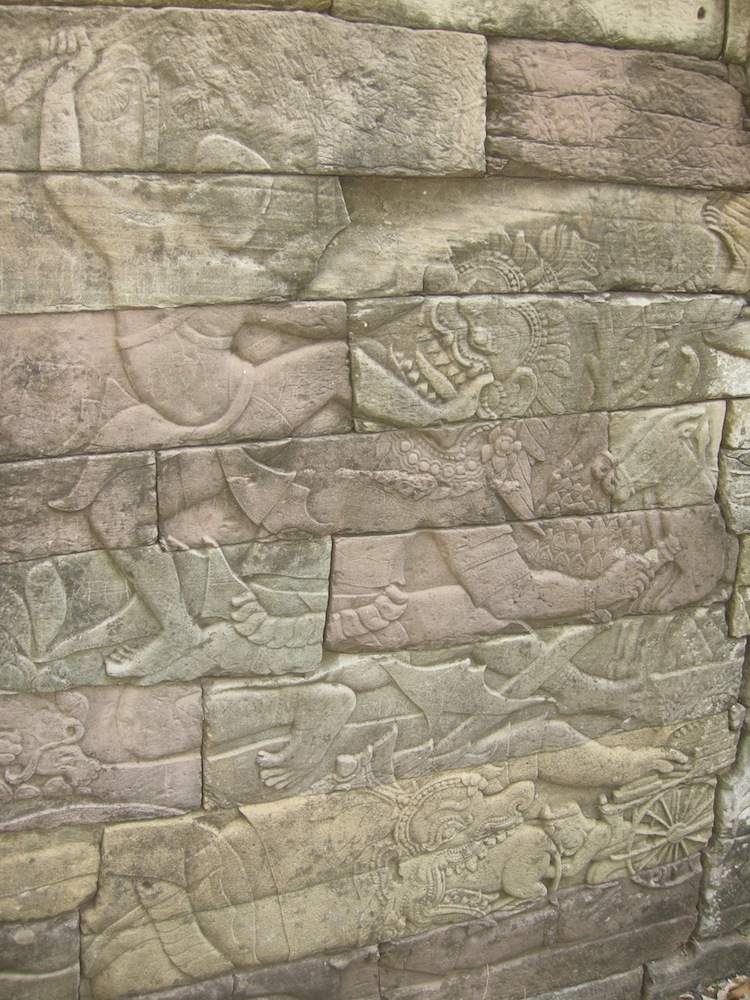
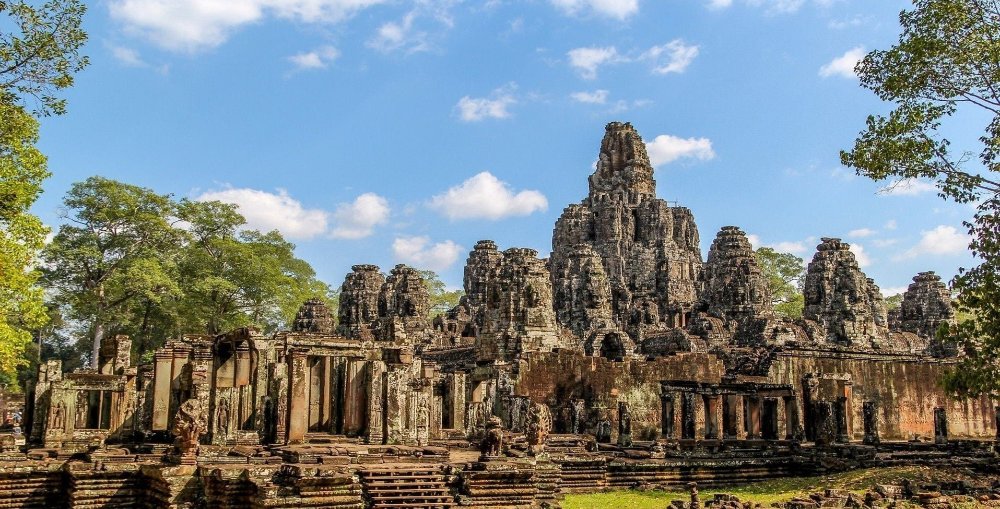
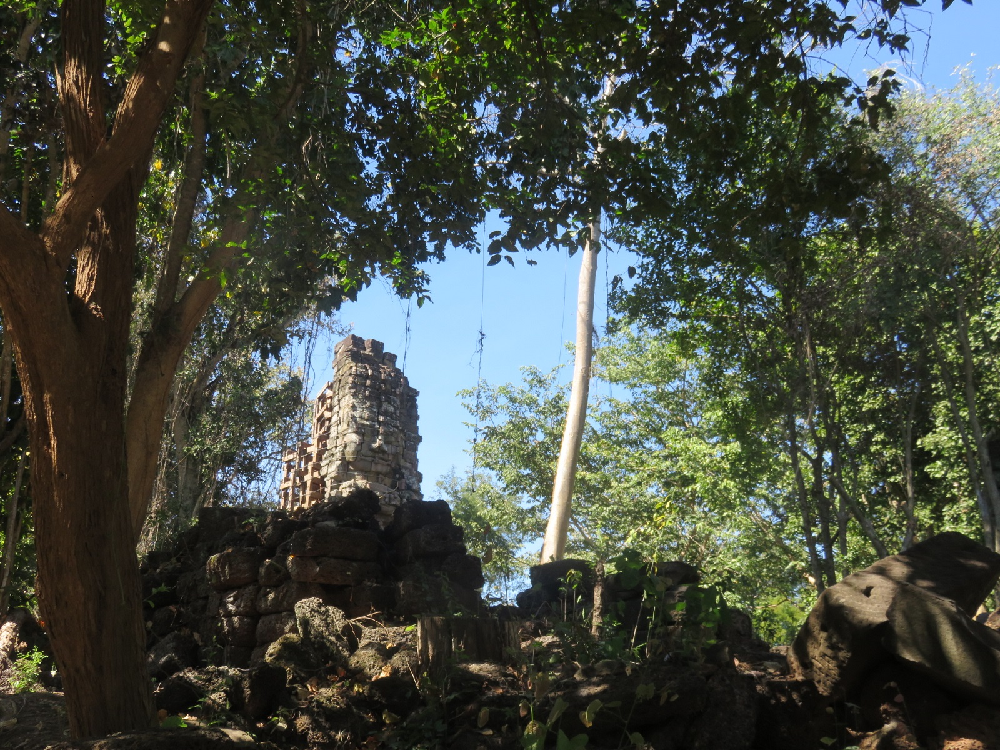
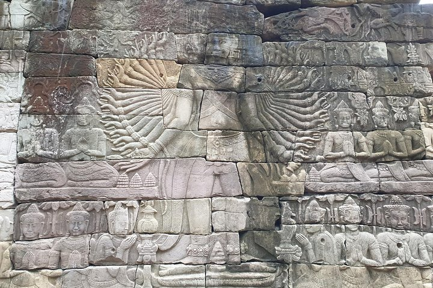

ប្រាសាទបន្ទាយឆ្មារ មានទីតាំងស្ថិតនៅភូមិបន្ទាយឆ្មារ ឃុំបន្ទាយឆ្មារ ស្រុកថ្មពួក ខេត្តបន្ទាយមានជ័យ និងមានចំងាយប្រមាណ ៧គីឡូម៉ែត្រពីទីប្រជុំជនខេត្តបន្ទាយមានជ័យខាងជើង។
 ប្រាសាទបន្ទាយឆ្មារ ជាប្រាសាទដែលត្រូវបានកសាងឡើងនៅចុងសតវត្សរ៍ទី១២ដល់ដើមសតវត្សរ៍ទី១៣ ក្នុងរជ្ជកាលព្រះបាទជ័យវរ្ម័នទី៧ ដើម្បីឧទ្ទិសដល់បុត្រា ព្រះអគ្គមហេសីជ័យទេវី និងសេនាជំនិត៤នាក់ របស់ព្រះអង្គដែលបានពលីនៅក្នុងសមរភូមិដេញចាមនៅឆ្នាំ១១៧៧។ បើតាមសិលាចារឹកប្រាសាទបន្ទាយឆ្មារ បានបង្ហាញឱ្យដឹងថា រាជស្រិន្រ្ទកុមារ ជាព្រះរាជបុត្រឆ្នើម និងជាទីសព្វព្រះហទ័យរបស់ព្រះបាទជ័យវរ្ម័នទី៧ និងបានជំនួយពីសេនា ៤រូបគឺ៖ អជ៌ន ទេព វទ្ធននិង ស្រីធរ និងទាហានជាច្រើនទៀត បានច្បាំងនឹងរាហ៊ូ ដែលជាប្រផ្នូលនិមិត្តនៃជនអាក្រក់ និងបំបះបំបោរខ្មែរ សៀមនៅខេត្តលពបូរី (សព្វថ្ងៃខេត្តនេះស្ថិតនៅខាងលិច ក្រុងបាងកក ប្រទេសថៃ)។ រាហ៊ូ បានយារយី ព្រះជន្មព្រះស្រិន្ទ្រកុមារជាខ្លាំង តែត្រូវព្រះអង្គ និងសេនាបង្ក្រាបបាន។ យោងតាមសិលាចារឹកខាងលើដដែលក៏បានបង្ហាញឱ្យដឹងបន្ថែមថា ព្រះបាទជ័យវរ្ម័នទី៧ បានយាងចេញទៅបង្ក្រាបពួកប៉ះបោងរបស់ជនក្បត់នៅនគរចម្ប៉ា។ ព្រះនាងជ័យទេវី និងព្រះរាជបុត្រីគង់នៅឯរាជធានីអង្គរ ព្រមទាំងព្រះបិតាព្រះនាងនាម តារានិន្ទ្រវរ្ម័ន ទ្រង់មានកង្វល់ជាខ្លាំង។រីឯព្រះបាទធរណិន្ទ្រវរ្ម័នទី២ ដែលជាព្រះបិតាព្រះជ័យវរ្ម័នទី ៧ទ្រង់ជាព្រះមហាក្សត្រ តែទ្រង់ប្រឈួនធ្ងន់ ហើយក៏សោយទិវង្គត។ នៅគ ស ១១៦១ ដល់១១៦៥ ព្រះបាទយសោវរ្ម័នទី២ ជាអ្នកស្នងរាជ្យបន្តពីព្រះបាទធរណិន្ទ្រវរ័្មនទី២ ដែលជាព្រះបិតារបស់ព្រះបាទជ័យវរ្ម័នទី៧។ ប៉ុន្តែមានមន្ត្រីក្បត់ម្នាក់ បានលួចធ្វើឃាតព្រះបាទយសោវរ្ម័នទី២ ហើយជ្រែករាជ្យដោយតាំងនាមថា ព្រះបាទត្រីភូនាទិត្យវរ្ម័ន សោយរាជ្យពី គ.ស ១១៦៥ ដល់១១៧៧។ បន្ទាប់ពីបានទទួលដំណឹងអាក្រក់នៃការចូលទិវង្គតរបស់ព្រះបិតា និងមានការជ្រែករាជ្យ ព្រះបាទជ័យវរ្ម័នទី៧ ក៏បានយាងវិលមកព្រះនគរវិញ ដោយចាកចេញពីប្រទេសចម្ប៉ា ដែលទ្រង់បានគ្រប់គ្រងហើយ។ ប៉ុន្តែ ជាអកុសល ដោយសារតែអ្នកក្រោមការគ្រប់គ្រងរបស់ព្រះអង្គ គឺព្រះបាទឥន្ទ្រវរ្ម័នទី៤ មានចិត្តក្បត់រំដោះនគរចម្ប៉ា ហើយទៅចុះចូលនឹងស្តេចយួននៃនគរដាយវៀត។ បន្ទាប់មកស្តេចចាមក៏មានចិត្តលោភលន់ ហើយដឹកនាំទ័ពមកវាយបក និងត្រួតត្រាមហានគរខ្មែ រដោយបានធ្វើគត់ព្រះបាទភូវិនាទិត្យវរ្ម័ន និងសម្លាប់ប្រជារាស្ត្រ សម្លាប់ទ័ពខ្មែរ ហើយប្លន់យកទ្រព្យសម្បត្តិយកទៅនគររបស់ខ្លួន។ គ្រានោះ ព្រះជ័យវរ្ម័នទី៧ និងជាមេទ័ព ពលសេនាដ៏មានសេចក្តីអង់អាចក្លាហាន រួមទាំងព្រះរាជបុត្រទ្រង់ព្រះនាម ស្រិន្ទ្រកុមារ ក៏បានប្រយុទ្ធនឹងទ័ពនៃស្តេចនគរចម្ប៉ា រហូតទទួលបានជោគជ័យ និងដេញខ្ចាត់ខ្ចាយ ហើយដាក់នគរចម្ប៉ាចំណុះសារជាថ្មីវិញម្តងទៀត តែព្រះរាជបុត្រស្រិន្ទ្រកុមារទ្រង់បានសុគតក្នុងសមរភូមិនោះ។ ដោយសារតែនគរខ្មែរខ្វះព្រះមហាក្សត្រគ្រងរាជ្យសម្បត្ដិ នៅ គ.ស ១១៨១ ដល់១២១៩ ព្រះបាទជ័យវរ្ម័នទី៧ ទ្រង់បានឡើងសោយរាជ្យបន្តពីព្រះបិតា និងព្រះបាទយសោវរ្ម័នទី២។ ក្រោយពេលព្រះអង្គឡើងសោយរាជ្យមក ទ្រង់តែងតែយកចិត្តទុកដាក់លើរាជ្យកិច្ចជាខ្លាំង រៀបចំនគរឱ្យប្រជារាស្ត្ររស់នៅសុខក្សេមក្សាន្ត។ ប៉ុន្តែទ្រង់នៅតែមានវិប្បយោគជាទម្ងន់ផងដែរអំពីការបាត់បង់សមាជិកគ្រួសារពីររូបរបស់ទ្រង់ គឺព្រះរាជបុត្រស្រិន្ទ្រកុមារ និងព្រះរាជអគ្គមហេសីជ័យទេវី សោយទិវង្គត ដោយរោគាពាធ។ បន្ទាប់ពីការយាងចូលទិវង្គតរបស់ព្រះអគ្គមហេសីរបស់ទ្រង់ សព្វនាម៉ឺនមុខមន្ត្រី និងរាស្ត្រ បានគាំទ្រឱ្យទ្រង់រៀបអភិសេកជាមួយនឹងព្រះនាងឥន្ទ្រទេវី ដែលត្រូវជាព្រះរៀមអតីតព្រះមហេសីរបស់ទ្រង់ ។ដោយសារតែព្រះអគ្គមហេសីទី២ ព្រះនាងមានចំណេះដឹងជ្រៅជ្រះ និងមានការអប់រំខ្ពស់ បានជួយរាជកិច្ចរបស់ទ្រង់បានយ៉ាងច្រើន ធ្វើឱ្យនគរខ្មែរក្លាយជាមហានគរដ៏ធំរុងរឿងបំផុតក្នុងប្រវត្តិសាស្ត្រខ្មែរ។
  ប្រាសាទបន្ទាយឆ្មារ មានស្ថាបត្យកម្មក្នុងរចនាបថបាយ័ន។ ប្រាសាទនេះមានផ្ទៃបរិវេណសរុបដល់ទៅ ៩ គីឡូម៉ែត្រការ៉េ មានកសិណទទឹង ៦៥ ម៉ែត្រព័ទ្ធជុំវិញ មានផ្លូវចូលគ្រប់ទិសធំដូចក្រុមប្រាសាទអង្គរធំដែរ ដោយមានរូបចម្លាក់យក្ស និងទេវតាទាញព្រ័ត្រ។ កំពែងព័ទ្ធជុំវិញមានប្រវែង ៨០០ ម៉ែត្រ ពីកើតទៅខាងលិច និង៦០០ ម៉ែត្រ ពីជើងទៅខាងត្បូង។ សម្រាប់តួប្រាសាទវិញ មានទំហំ ២៥០ម៉ែត្រ គុណនឹង ១៩០ម៉ែត្រ។ ក្រៅពីចម្លាក់ស្តីពីចម្បាំងនឹងនគរចម្ប៉ា សកម្មភាពគ្រប់វិស័យ ទំនាក់ទំនងការទូត ពាណិជ្ជកម្ម វប្បធម៌ និងប្រទេសក្រៅ ចម្លាក់ក៏និយាយពីសកម្មភាពខាងពុទ្ធសាសនាមហាយានដែរ។ នៅជុំវិញប្រាសាទ មានបារាយណ៍ធំមួយ ហើយនៅបរិវេណខាងក្រៅព័ទ្ធជុំវិញ ប្រាសាទនេះមានប្រាសាទ ៩ទៀត។ នៅខាងកើតប្រាសាទមានធម្មសាលាមួយ ដែលសិលាចារឹកចារថា ជាកន្លែងបូជាសព និងឆ្ងាយពីនោះមានបារាយណ៍មួយទំហំ ១៦០០ម៉ែត្រគុណនឹង៧៥០ម៉ែត្រ នៅទិសខាងកើត និងមានប្រាសាទមួយទៀត ឈ្មោះមេបុណ្យ នៅកណ្តាល។ ប្រាសាទមេបុណ្យ គេកសាងឡើងតាមព្រះតម្រិះព្រះបាទ ជ័យវរ្ម័នទី៧ ឧទ្ទិសដល់ព្រះមាតាទ្រង់ ដែលបានសោយទិវង្គត ព្រោះតែកើតទុក្ខនឹងព្រះអង្គ និងព្រះរាជនត្តា(ចៅ)ព្រះស្រិន្ទ្រកុមារ កាលនាំទ័ពច្បាំងនឹងប្រទេសចម្ប៉ា។
 ក្រុមអ្នកប្រាជ្ញ អ្នកជំនាញការ សាស្ត្រាចារ្យ និងវាគ្មិនជាតិ អន្តរជាតិសំខាន់ៗ ដែលបានទៅពិនិត្យ និងវាយតម្លៃផ្ទាល់ដល់ប្រាសាទនេះ បានបង្ហាញការចាប់អារម្មណ៍ថា គ្រាន់តែលើជញ្ជាំង ឬថែវ ឬរបងទី១ ក្នុងប្រាសាទបន្ទាយឆ្មារ គឺមានរូបចម្លាក់ចម្រុះយ៉ាងសន្ធឹកសន្ធាប់ ដែលពណ៌នាតាំងពីទេវរូបព្រហ្មញ្ញសាសនា មានរូបព្រះព្រហ្ម ព្រះនារាយណ៍ ឬព្រះវិស្ណុ និង ព្រះសិវៈ ឬព្រះឥសូរ និងតួអង្គសំខាន់ៗផ្សេងទៀតនៃសាសនានោះ។ ចម្លាក់សំខាន់ជាងគេ គឺរូបអវតាលោកេស្វរៈព្រហស្ថ៣២ ជាពោធិសត្វនៃព្រះពុទ្ធសាសនា អមដោយចម្លាក់រូបអវតា ព្រះហស្ថ១៦ ដែលសល់តែ១រូប ត្បិតរូបចម្លាក់ដូចគ្នា។
ព្រះបាទជ័យវរ្ម័នទី៧ និងព្រះអគ្គមហេសីជ័យទេវី ដែលអគ្គមហេសីទី១ របស់ព្រះបាទជ័យវរ្ម័នទី៧ មានព្រះរាជបុត្រ ចំនួន ៤ ព្រះអង្គ ដែលគេស្គាល់ព្រះនាមក្នុងចំណោមច្រើនអង្គគឺ៖ ១.ព្រះសុរិយកុមារ ទ្រង់ជាកវីឯកមួយអង្គ ក្នុងការតែងកាព្យសំស្ក្រឹត នៅសិលាចារឹកប្រាសាទតាព្រហ្ម។ ២.ព្រះវីរៈកុមារ ជាកវីតែងកាព្យជាភាសាសំស្ក្រឹតនៅប្រាសាទព្រះខ័ន។ ៣.ព្រះឥន្ទ្រវរ្ម័ន ជាចៅហ្វាយខេត្តលពបូរី បន្តគ្រប់គ្រងនៅលពបូរី បន្តពិព្រះស្រិន្ទ្រកុមារ ហើយនិងគ្រងរាជបន្តពីព្រះបិតា (ឆ្នាំ១២២២ដល់១២៤៣)។ ៤.ព្រះស្រិន្ទ្រកុមារ ជាប្រមុខមេទ័ព ដែលសុគតនៅសមរភូមិ៕
test